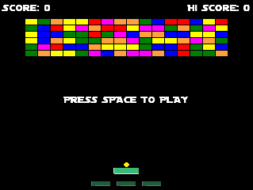

Welcome to the BreakThrough tutorial! This tutorial is designed to get you up and running using GameMaker Studio 2 in as short a time as possible and will take you through the steps required to make a "breakout" style game. In this tutorial you'll be making a basic but playable version of the game from scratch using GML (the GameMaker Language). Should you prefer a more visual approach to game making, this tutorial is available using DnD™ from the Tutorials section of the Start Page when you open GameMaker Studio 2. 
Click the Next button at the bottom and we'll get started making some sprites for the game...